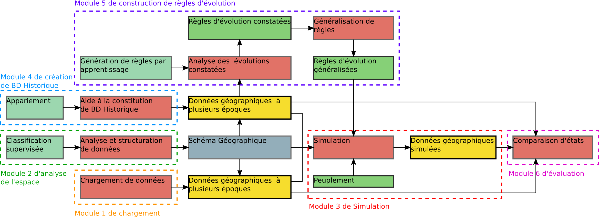

Accueil du site >
Présentation > Les modules du projet GeOpenSim

Les modules du projet GeOpenSim
Le projet est organisé en 6 modules :
* Le module 1 de chargement des données géographiques
* Le module 2 d’analyse de l’espace
* Le module 3 de simulation
* Le module 4 de création de bases de données historiques
* Le module 5 de construction de règles d’évolution
* Le module 6 d’évaluation des résultats de simulation
